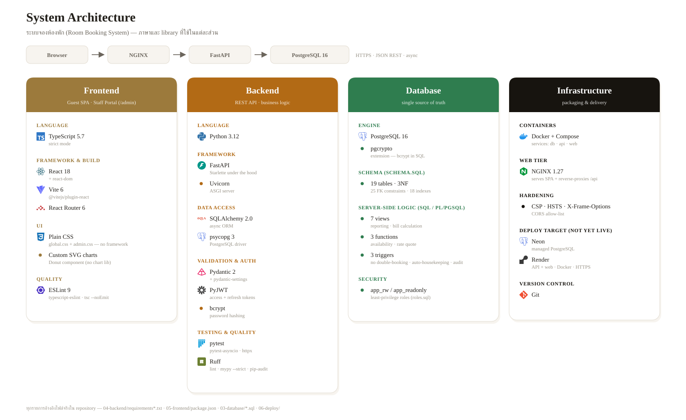
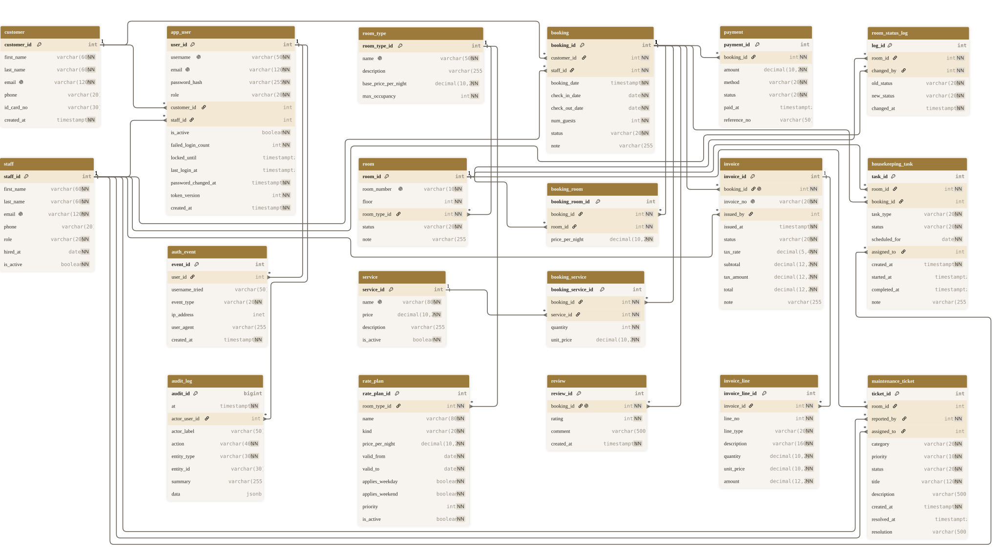

310-2209 Database Systems · Mini-DB Group Project · Draft 2
ระบบจองห้องพัก
Room Booking System
Tigger Oriental — Group 6810301002 · 003 · 004 · 012 · 037 · 039
คู่มือทำความเข้าใจระบบทั้งชุด สำหรับทีม — ไล่จากชั้นล่างสุด (Infrastructure)
ขึ้นไปจนถึงชั้นบนสุด (Deployment) ทีละชั้น
ปัญหา
สมุดกับ Excel พังตรงไหน
- จองห้องซ้ำช่วงวันเดียวกัน (double-booking)
- หาห้องว่างตามช่วงวันที่ต้องไล่ดูเอง
- สรุปรายได้ / อัตราการเข้าพัก ทำมือ
- ตรวจสอบย้อนหลังไม่ได้ — ใครทำอะไรเมื่อไหร่
ขอบเขต
ระบบทำอะไรได้ · ใครใช้
ค้นห้องว่างตามช่วงวัน
real-time จากการจองจริง
จอง 1 ครั้ง หลายห้อง + บริการเสริม
ราคา snapshot ตอนจอง
เช็คอิน–เช็คเอาท์ · ชำระหลายงวด
ใบแจ้งยอดคำนวณสด · เลื่อนวันได้
Housekeeping · Maintenance Draft 2
กระดานงานแม่บ้าน · ใบแจ้งซ่อม
Rate plans · Invoicing Draft 2
ราคาตามฤดู/วันหยุด · ใบกำกับภาษีพิมพ์ได้
รีวิว · Audit trail · รายงาน
occupancy · revenue · forecast
- Actors (6 roles): customer · receptionist · housekeeping · accounting · manager · admin
แผนที่เดินเรื่อง
5 ชั้น จากล่างขึ้นบน
- 1Infrastructure — คอนเทนเนอร์ที่ทำให้โค้ดทุกชั้นรันได้จริง
- 2Database — ข้อมูลและกติกาธุรกิจที่ยึดเป็นความจริงหนึ่งเดียว
- 3Backend — API ที่แปลงกติกาธุรกิจเป็นบริการให้เรียกใช้
- 4Frontend — หน้าจอที่ลูกค้าและพนักงานใช้งานจริง
- 5Deployment — เอาทั้งหมดไปรันให้คนอื่นเข้าถึงได้
แต่ละชั้นจะตอบ 4 คำถามเดิมซ้ำทุกครั้ง: คืออะไร (What) ·
ทำเมื่อไหร่ (When) · ทำไมเลือกแบบนี้ (Why) · ทำงานอย่างไร (How)
ภาพรวมทั้งระบบ ก่อนเจาะลึกทีละชั้น

ส่วนที่ 1 จาก 5
Infrastructure
คอนเทนเนอร์ · nginx · network — ฐานที่ทำให้โค้ดทุกชั้นข้างบนรันได้จริง
Infrastructure — คืออะไร (What)
3 คอนเทนเนอร์ + ประตูหน้าบ้าน 1 บาน
container db
PostgreSQL 16 · port โฮสต์ 5433
container api
FastAPI/uvicorn · port 8000
container web
nginx + React build (static) · port 8081
nginx
proxy path /api/* เข้า container api ให้อัตโนมัติ
ผู้ใช้เห็นแค่ port เดียว (8081) — คอนเทนเนอร์คุยกันเองผ่าน Docker network ภายใน
(roombooking-stack_default) ไม่ต้องเปิด port ฐานข้อมูลออกอินเทอร์เน็ตเลย
Infrastructure — ทำเมื่อไหร่ และทำไม (When / Why)
วางรากฐานก่อนเขียนฟีเจอร์แม้แต่บรรทัดเดียว
- When — ตั้ง
docker-compose.yml ตั้งแต่ต้น ก่อน backend/frontend จะมี endpoint จริงด้วยซ้ำ
เพื่อให้ทุกคนในทีมรันสภาพแวดล้อมเดียวกันได้ทันทีตั้งแต่วันแรก
- Why — reproducible: "งานที่เครื่องฉันรันได้" ใช้ไม่ได้กับทีม 6 คน — Docker การันตีว่า PostgreSQL/Python/Node
เป็นเวอร์ชันเดียวกันเป๊ะทุกเครื่อง
- Why — dev/prod parity: คอนเทนเนอร์ชุดเดียวกับที่รัน local คือของที่จะขึ้น production จริง ไม่ต้องเขียนโค้ดสองชุด
- Why — isolation: ฐานข้อมูลทดสอบพังได้ ลบทิ้งสร้างใหม่ได้ทุกเมื่อ ไม่กระทบเครื่องคนอื่นในทีม
Infrastructure — ทำงานอย่างไร (How)
1 คำขอจากเบราว์เซอร์ เดินทางอย่างไร
Browser
nginx :8081
FastAPI :8000
PostgreSQL :5433
- 1 — เบราว์เซอร์ขอหน้าเว็บ → nginx ส่งไฟล์ React ที่ build ไว้แล้ว (static ล้วน ๆ ไม่มีเซิร์ฟเวอร์ render)
- 2 — เบราว์เซอร์เรียก API เช่น
/api/v1/bookings → nginx เห็น path ขึ้นต้นด้วย /api แล้ว proxy
ต่อไปที่ container api
- 3 — FastAPI ตรวจ JWT ก่อน แล้วค่อยคุยกับ PostgreSQL ผ่าน psycopg 3 (async)
- 4 — ผลลัพธ์วิ่งย้อนเส้นทางเดิมกลับไปเป็น JSON
Infrastructure — ทำงานอย่างไร (How) · รายละเอียดใน docker-compose.yml
ไม่ใช่แค่ "รันแล้วหวังว่าจะติด"
- Healthcheck ต่อกันเป็นห่วงโซ่ —
api รอจน db ตอบ pg_isready
ก่อนถึงจะเริ่ม (depends_on: condition: service_healthy) แล้ว web ก็รอ api
ให้ /health ตอบ 200 ก่อนเช่นกัน — กัน race condition ตอน "ขึ้นพร้อมกัน" ไม่ใช่แค่ "สั่งพร้อมกัน"
- จำกัดทรัพยากรต่อ container —
db 512MB · api 512MB/1 CPU ·
web 256MB/0.5 CPU — คิดเรื่อง capacity ไว้ตั้งแต่ตอน dev ไม่ใช่มาคิดตอน production พัง
- Volume ชื่อ
pgdata เก็บข้อมูล PostgreSQL แยกจากตัว container — ลบ/สร้าง container
ใหม่ได้โดยข้อมูลไม่หาย (ต้องลบ volume เองถึงจะล้างข้อมูลจริง)
- ค่าเริ่มต้นปลอดภัยไว้ก่อน — รหัสผ่าน/secret ทุกตัวมี default (เช่น
${JWT_SECRET:-local-demo-secret...})
ให้ docker compose up ใช้ได้ทันทีโดยไม่ต้องตั้งค่าอะไรก่อน แต่ override ได้ผ่านไฟล์ .env
(git-ignored) ตอนจะขึ้น production จริง
Infrastructure — ทำงานอย่างไร (How) · nginx ทำอะไรมากกว่า proxy
ประตูหน้าบ้านที่ทำงานหนักกว่าที่คิด
- ใส่ security header เอง (CSP, X-Frame-Options, X-Content-Type-Options, Referrer-Policy) — ป้องกันตั้งแต่
ก่อนคำขอจะถึง React ด้วยซ้ำ
- แคช asset ที่ build แล้ว (
/assets/*, ฟอนต์) แบบ immutable 1 ปี — เพราะไฟล์พวกนี้มีชื่อ
hash ต่อท้าย เปลี่ยนโค้ดแล้ว build ใหม่ ชื่อไฟล์จะเปลี่ยนเองโดยอัตโนมัติ
- วิดีโอ hero ใช้
no-cache (ไม่ใช่ไม่แคช แค่ต้อง revalidate ทุกครั้ง) เพราะชื่อไฟล์คงที่แต่เนื้อหา
อาจถูกเปลี่ยนได้
try_files $uri /index.html — กด refresh หน้า /admin/bookings/42 ตรง ๆ แล้วไม่เจอ 404
เพราะ React Router (client-side) เป็นคนจัดการ route จริง ไม่ใช่ nginx
ส่วนที่ 2 จาก 5
Database
PostgreSQL 16 — ข้อมูลและกติกาธุรกิจที่ยึดเป็นความจริงหนึ่งเดียวของทั้งระบบ
Database — คืออะไร (What)
19 ตาราง · 6 กลุ่ม +6 ตารางใหม่
Catalog
room_type · room · service
People
customer · staff
Auth
app_user · auth_event
Booking
booking · booking_room · booking_service
Payment / Review / Log
payment · review · room_status_log
Ops & Revenue Draft 2
rate_plan · invoice · invoice_line · housekeeping_task · maintenance_ticket · audit_log
03-database/schema.sql คือต้นทางความจริงเดียว (LOCKED) — โค้ด backend
ทุกบรรทัด (models) มิเรอร์ตามไฟล์นี้ ไม่ใช่กลับกัน
Database — ทำเมื่อไหร่ และทำไม (When / Why)
ออกแบบก่อนเขียนโค้ดสักบรรทัด แล้วล็อกไว้
- When — ผ่าน 3 ขั้น conceptual (ER model) → logical (normalization) → physical (DDL จริง)
ก่อน backend จะเริ่มเขียน model ใด ๆ เลย เสร็จแล้ว "ล็อก" ไม่ให้แก้อีกตลอดการพัฒนา
- Why lock — กัน schema drift: ทุกคนในทีมเขียนโค้ดอ้างอิงโครงสร้างเดียวกันตลอด ไม่ต้อง migrate ข้อมูลเก่าไปมา
- Why normalize (1NF→3NF) — ไม่เก็บข้อมูลซ้ำ (ยกเว้นตั้งใจ เช่น ราคา snapshot ตอนจอง) → แก้ข้อมูลที่เดียว
ถูกทุกที่ ไม่มี update anomaly
- Why constraint-first — กติกาธุรกิจ (เช่น "ห้ามจองห้องซ้อนกัน") ฝังไว้ที่ฐานข้อมูลเป็นด่านสุดท้าย
แม้โค้ด backend จะมีบั๊กก็ยังกันได้
Database — ทำงานอย่างไร (How) · ER Diagram ฉบับสมบูรณ์

Database — ทำงานอย่างไร (How) · Integrity
บังคับกติกาที่ชั้นฐานข้อมูล ไม่ใช่แค่ในโค้ด
PK
ทุกตาราง (19)
FK
20+ ความสัมพันธ์ · RESTRICT / CASCADE
UNIQUE
email · room_number · invoice_no · (booking_id, room_id) · …
CHECK
check_out > check_in · rating 1–5 · role ∈ 6 ค่า · enum อื่น ๆ
NOT NULL
ฟิลด์สำคัญ + password_hash
Database — ทำงานอย่างไร (How) · Trigger ตัวอย่าง
Double-booking เข้า DB ไม่ได้
bi_booking_room_no_overlap — BEFORE INSERT/UPDATE บน booking_room
ตรวจช่วงวันซ้อนกับการจองที่ยัง active
ERROR: ห้อง room_id=7 ถูกจองในช่วงวันที่ 2026-09-07 ถึง 2026-09-09 แล้ว (double booking)
แอปเช็คก่อนเพื่อคืน 409 ที่อ่านง่าย — trigger คือแนวป้องกันสุดท้าย
Database — ทำงานอย่างไร (How) · เพิ่มใน Draft 2
Trigger & Function ใหม่ 2 ชุด
au_booking_checkout_housekeeping Draft 2 — AFTER UPDATE บน
booking: เช็คเอาท์แล้วสร้างงานทำความสะอาดในกระดาน housekeeping ให้อัตโนมัติaiu_booking_audit Draft 2 — AFTER INSERT/UPDATE สถานะการจอง:
บันทึกลง audit_log ทุกครั้งที่ booking เปลี่ยนสถานะ ไม่พึ่งแอปชั้นบนfn_quote_room / fn_quote_stay Draft 2 — คำนวณราคาต่อคืน/ทั้งทริป
โดยเลือก rate plan ที่ priority สูงสุดที่ใช้ได้ในวันนั้น ก่อน fallback ไปราคาพื้นฐานfn_available_rooms — จาก Draft 1 ยังใช้เป็นแกนหลักของการค้นห้องว่าง
Database — ทำงานอย่างไร (How) · Views
7 Views 4 ใหม่
v_booking_bill
ค่าห้อง+บริการ−จ่ายแล้ว = ยอดค้าง
v_current_guests
ผู้เข้าพักตอนนี้
v_room_type_revenue
รายได้ตามประเภทห้อง
v_housekeeping_board Draft 2
งานแม่บ้าน + ห้อง + ผู้รับผิดชอบ
v_maintenance_open Draft 2
ใบแจ้งซ่อมที่ยังไม่ปิด
v_daily_revenue Draft 2
รายได้รายวัน สำหรับกราฟ/forecast
v_invoice_summary Draft 2
สรุปใบกำกับภาษี + ยอดค้างต่อใบ
Database — ทำงานอย่างไร (How) · 15 Business Queries
เทคนิคที่ใช้ (CH04)
- INNER / LEFT JOIN หลายตาราง · GROUP BY … HAVING
- subquery + NOT EXISTS (ห้องว่าง) · anti-join (ลูกค้าไม่เคยจอง)
- window:
RANK() OVER · SUM() OVER ()
- occupancy rate —
generate_series + CROSS JOIN LATERAL
- 2 query ด้าน security — audit login ล้มเหลว / สถานะบัญชี
`queries.sql` เป็นส่วนหนึ่งของ `03-database/` ที่ล็อกไว้ตั้งแต่ Draft 1 — ไม่แก้ไข
Database — ทำงานอย่างไร (How) · Connection & กติกาธุรกิจ
ต่อ DB ยังไง เก็บกติกาไว้ตรงไหน
Connection pool
pool_size=5 · max_overflow=10
· pool_pre_ping=True — เช็คว่า connection ยังไม่หลุดก่อนใช้ทุกครั้ง
hold_expiry_minutes
30 นาที — การจองออนไลน์ที่ยังไม่จ่ายเงิน จะถูกปล่อยห้องคืนอัตโนมัติ
free_cancellation_hours
48 ชั่วโมง — ยกเลิกก่อนเช็คอิน 48 ชม. คืนเงินเต็ม
หลังจากนั้นหักค่าธรรมเนียม 1 คืน
app_rw / app_readonly
load-db.sh ตั้งรหัสผ่าน role ให้ตรงกับที่
docker-compose.yml คาดไว้ทุกครั้งที่โหลด DB ใหม่
ตัวเลขพวกนี้ไม่ได้ฝังในโค้ด (hardcode) แต่มาจาก Settings ที่อ่านจาก
environment variable — เปลี่ยนนโยบายได้โดยไม่ต้องแก้โค้ดหรือ deploy ใหม่
Database — Security
ป้องกันตั้งแต่ชั้นล่างสุด
- รหัสผ่าน = bcrypt hash เท่านั้น (pgcrypto / bcrypt) — DB ไม่มี plaintext
- Least-privilege role
app_rw — DML ได้ แต่ DROP/ALTER TABLE ไม่ได้
(ทดสอบ: ERROR: must be owner of table review)
- Audit ระดับ DB:
auth_event + room_status_log +
audit_log Draft 2 (เขียนโดย trigger ไม่ใช่แอป)
- role CHECK บังคับ 6 ค่า Draft 2 — ผิด role เข้า DB ไม่ได้ตั้งแต่ชั้น constraint
ส่วนที่ 3 จาก 5
Backend
FastAPI — แปลงกติกาธุรกิจในฐานข้อมูลให้เป็นบริการที่ frontend เรียกใช้ได้
Backend — คืออะไร (What)
FastAPI · 10 module · ~65 endpoint
ภาษา/เฟรมเวิร์ก
Python 3.12 · FastAPI + SQLAlchemy 2 (async) + psycopg 3
โครงสร้างโค้ด (layered)
core (config/security) · db (session) · models (ตรงกับ schema.sql)
· schemas (Pydantic In/Out) · services (ตรรกะธุรกิจ) · api (route บาง ๆ)
Route module (10)
auth · rooms · bookings · customers · rate_plans · invoices ·
housekeeping · maintenance · reports · admin
Endpoint
~65 ตัว ทุกตัวมี RBAC + validation ก่อนแตะฐานข้อมูล
Backend — ทำเมื่อไหร่ และทำไม (When / Why)
สร้างทีละชั้น เริ่มจาก auth
- When — เริ่มหลัง schema ล็อกเสร็จ ทำ auth ก่อน (ทุกอย่างต้องมี login) ตามด้วย rooms/bookings
(แกนหลักของระบบ) แล้วค่อยขยายเป็นโมดูล ops (housekeeping/maintenance/invoices/rate-plans) ใน Draft 2
- Why layered — แยก "โครงสร้างข้อมูล" (models) ออกจาก "กติกาธุรกิจ" (services) ออกจาก "ทางเข้า HTTP" (api)
แก้ตรงไหนก็ไม่กระทบชั้นอื่นโดยไม่ตั้งใจ
- Why async — รับหลายคำขอพร้อมกันได้โดยไม่บล็อก เหมาะกับงานที่รอ I/O เยอะอย่างระบบจอง
- Why RBAC 6 role — พนักงานแต่ละแผนกเห็น/ทำได้ไม่เท่ากัน (แม่บ้านไม่เห็นรายงานการเงิน,
บัญชีเปลี่ยนสถานะห้องไม่ได้)
Backend — ทำงานอย่างไร (How)
1 คำขอ เดินผ่าน 4 ด่าน
- 1 — Middleware ตรวจ JWT access token จาก header → รู้ว่าใครเรียก role อะไร
- 2 — FastAPI dependency
require_role(...) เช็คสิทธิ์ก่อนเข้า route — ไม่ผ่านคืน 403 ทันที
- 3 — Route เรียก service function (ตรรกะธุรกิจ) → service คุย DB ผ่าน SQLAlchemy (async)
- 4 — ผลลัพธ์ผ่าน Pydantic schema (
*Out) แปลงเป็น JSON — ฟิลด์ที่ไม่อยากให้เห็นจะไม่หลุดออกไปเอง
ตัวอย่าง IDOR guard: booking ที่เป็นของลูกค้าคนอื่น → ตอบ 404 ไม่ใช่ 403
(ไม่บอกด้วยซ้ำว่า resource นั้นมีอยู่จริง)
Backend — ทำงานอย่างไร (How) · Config & Session
ตัวเลขนโยบายมาจาก environment ไม่ใช่โค้ด
Settings
โหลดครั้งเดียวตอน startup (@lru_cache) จาก .env
/ environment variable — ไม่มี secret ฝังในซอร์สโค้ด
JWT
access token อายุ 15 นาที · refresh token อายุ 7 วัน · algorithm HS256
Account lockout
ผิดรหัส 5 ครั้ง → ล็อก 15 นาที
Rate limit
5/minute ต่อ IP บน /auth/*
DB session
1 request = 1 session: สำเร็จ → commit อัตโนมัติ, error → rollback
อัตโนมัติ, จบแล้ว close เสมอ (ไม่มี connection ค้าง)
Backend — Security
Defense in depth
- JWT access 15 นาที (ในหน่วยความจำ) + refresh หมุน เป็น HttpOnly cookie ·
token_version เพิกถอนได้
- RBAC
require_role() ครบ 6 role · กัน IDOR (customer เห็นเฉพาะของตัวเอง, ตอบ 404)
- Brute-force: ผิด 5 ครั้ง → ล็อก 15 นาที · audit ทุก attempt · dummy hash กัน enumeration
- CORS allowlist · CSP + security headers ·
extra="forbid" กัน mass-assignment
Backend — พิสูจน์ด้วยเทสต์
160 / 55
backend pytest / frontend vitest — ผ่านทุกตัว (จาก 62 ที่ไม่เคยรันจริง / 0 ใน Draft 1)
- สร้าง DB ทิ้งจาก schema.sql + seed.sql ทุกครั้งที่รันเทสต์ — ไม่มี state ค้างข้ามรอบ
- ruff clean · mypy --strict clean · tsc + eslint clean · vite build clean
ส่วนที่ 4 จาก 5
Frontend
React — หน้าจอที่ลูกค้าและพนักงานสัมผัสจริง เรียก backend ที่เพิ่งอธิบายไปทั้งหมด
Frontend — คืออะไร (What)
2 เว็บใน 1 โค้ดเบส
หน้าลูกค้า (11 หน้า)
Landing · Search · RoomType · ConfirmReservation ·
Payment · Bookings · BookingDetail · Login · Register ฯลฯ
พอร์ทัลพนักงาน (17 หน้า, /admin/*)
Overview · BookingsAdmin · RoomsAdmin ·
Housekeeping · Maintenance · RatePlans · Invoices · Reports · Reviews · Audit · Users ฯลฯ
เทคโนโลยี
React 18 + Vite + TypeScript (strict) — plain CSS ไม่มี framework
ภาษา
EN + ไทย ทั้งเว็บ (~700 คีย์)
Frontend — ทำเมื่อไหร่ และทำไม (When / Why)
รอ API พร้อมก่อน ค่อยต่อจริง
- When — เริ่มต่อกับ backend หลัง endpoint หลัก (auth/rooms/bookings) ใช้งานได้แล้ว หน้าลูกค้าฝั่ง booking
flow มาก่อน ส่วนพอร์ทัลแอดมินขยายทีละหน้าไปพร้อมกับ backend module ใหม่ ๆ ใน Draft 2
- Why 2 พื้นผิว — ลูกค้ากับพนักงานต้องการคนละแบบ: ลูกค้าอยากได้หน้าสวย ภาพใหญ่ จองง่าย;
พนักงานอยากได้ตารางข้อมูลเยอะ ทำงานไว มี filter ละเอียด ทั้งสองแชร์ API/ระบบ auth เดียวกัน
- Why bilingual — พนักงานจริงและแขกจริงใช้ภาษาไทย ระบบใช้งานได้จริงต้องไม่บังคับอังกฤษ
Frontend — ทำงานอย่างไร (How)
เรียก API ยังไง จำ token ตรงไหน
lib/api.ts — fetch client กลางตัวเดียว ทุกหน้าเรียกผ่านนี้ ไม่มี fetch กระจัดกระจาย- Access token — เก็บในหน่วยความจำ (ไม่ใช่ localStorage) กัน XSS ขโมย token
- Refresh token — httpOnly cookie ต่ออายุ session แบบเงียบ ๆ เมื่อ access token หมดอายุ
- Component ใช้ร่วมกัน —
<Pager> <EmptyState> <TableEmpty>
<FilterPanel> ใช้ซ้ำได้ทุกตารางในพอร์ทัลแอดมิน
- ดีไซน์: display type ตัวใหญ่ ปุ่ม pill · section สลับขาว/เทา/ดำ · accessibility (focus ring, label ครบ,
aria-live toast, reduced-motion)
Frontend — ทำงานอย่างไร (How) · Routing & สิทธิ์การเข้าถึง
กันสิทธิ์ 2 ชั้น ไม่ใช่เชื่อ backend อย่างเดียว
<GuestRoute> ครอบหน้าลูกค้าทุกหน้า — ถ้า staff ล็อกอินแล้วหลงเข้าหน้าลูกค้า จะถูกเด้งไปพอร์ทัลแอดมินทันที<ProtectedRoute> ครอบทุก route ใต้ /admin/* พร้อมระบุ require="staff" /
"manager" / "frontdesk" เจาะจงเป็นหน้า ๆ ไป — พิมพ์ URL admin ตรง ๆ โดยไม่มีสิทธิ์ก็เข้าไม่ได้- route ที่ต้องล็อกอิน (เช่น
/bookings, /book/confirm) ครอบด้วย
<ProtectedRoute> เปล่า ๆ (แค่เช็คว่าล็อกอินหรือยัง ไม่เช็ค role)
- นี่คือ UX เท่านั้น — ด่านจริงที่ป้องกันข้อมูลคือ backend RBAC (ดูสไลด์ Backend Security) ฝั่ง frontend
แค่ไม่ให้ผู้ใช้เดินไปเจอหน้าที่กดอะไรไม่ได้อยู่ดี
Frontend — i18n ใหม่ทั้งหมดใน Draft 2
เว็บทั้งเว็บพูดไทยได้
- ~700 คีย์ข้อความ ครอบทั้งหน้าลูกค้า (11 หน้า) และพอร์ทัลแอดมิน (17 หน้า)
- สลับภาษาแบบไม่ต้องรีโหลดหน้า · จำค่าที่เลือกไว้ · sync
<html lang>
- รูปแบบวันที่/ตัวเลขปรับตามภาษา (เดือนไทยแสดงถูกต้อง — บั๊กที่เคยพบและแก้แล้ว)
- ยืนยันแล้วด้วยการ login จริงทั้งฝั่งลูกค้าและพนักงานทุก role
Frontend — Feature ใหม่ใน Draft 2
จาก 4 หน้าแอดมิน สู่พอร์ทัล 17 หน้า
Housekeeping board
มอบหมายงาน · auto-assign ตามภาระงาน
Maintenance tickets
แจ้งซ่อม → priority → resolve
Rate plans + Rate calendar
ราคาตามฤดู/วันหยุด/โปรโมชัน
Invoices (พิมพ์ได้)
ใบกำกับภาษี + ลายน้ำ + folio แขก
Reports
revenue · occupancy · forecast · rate calendar
Audit trail + User admin
ใครทำอะไรเมื่อไหร่ · จัดการสิทธิ์ผู้ใช้
Reservation tape (TapeChart)
มุมมองปฏิทินห้อง แบบ timeline
Advanced filters
ทุกตารางแอดมิน — สถานะ ช่วงวัน ช่วงราคา ช่วงจำนวนแขก ฯลฯ
Frontend — บั๊กที่พบและแก้ใน Draft 2
Hardening pass
อาการที่เจอ
- ตัวเลขสรุป/ตารางใหญ่บางจุด คำนวณจากข้อมูลที่ดึงมาไม่ครบ (limit หน้าแรก)
- ที่อยู่โรงแรมใน footer/ใบเสร็จ กับหน้ารายละเอียดการจอง ไม่ตรงกัน
- ชื่อเดือนภาษาไทยแสดงเป็นอังกฤษเมื่อสลับเป็นโหมดไทย
- ลายน้ำบนใบกำกับภาษีไม่ขึ้น (โลโก้พื้นดำ + stacking context ผิด)
วิธีแก้
- 8 endpoint เปลี่ยนเป็น server-side pagination พร้อมยอดรวมที่ถูกต้องจริง
- รวมเป็นแหล่งเดียว
lib/hotel.ts ใช้ร่วมกันทุกจุด
- แก้
fmtDate/fmtStay ให้อ้างอิง locale ไทยถูกต้อง
filter: invert() แก้สีโลโก้ + ใส่ z-index ให้ stacking context ถูก
ส่วนที่ 5 จาก 5
Deployment
เอาทั้ง 4 ชั้นข้างบนไปรันเป็นระบบเดียว ให้คนอื่นเข้าถึงได้
Deployment — คืออะไร (What)
รันจริงบน Docker วันนี้
PostgreSQL
container db · port 5433 · schema → roles → seed
API
container api · FastAPI/uvicorn · port 8000 (/docs)
Web
container web · nginx + React build · port 8081
คลาวด์ (แผนไว้)
Neon (DB) + Render (API) + Vercel (Web) — เอกสารพร้อมใน DEPLOY.md
Deployment — ทำเมื่อไหร่ และทำไม (When / Why)
รันบนเครื่อง local ทุกวันตั้งแต่ต้น
- When — สแตก Docker รันอยู่บนเครื่อง dev มาตั้งแต่ Infrastructure ถูกวางในวันแรก ๆ ใช้ทดสอบทุกฟีเจอร์
ก่อนส่งงานแต่ละรอบ — ยังไม่ได้ขึ้นคลาวด์จริงในตอนนี้
- Why local-first — ทดสอบ/แก้บั๊กได้เร็วกว่า ไม่ต้องรอ deploy ทุกครั้งที่แก้โค้ด ไม่มีค่าใช้จ่ายระหว่างพัฒนา
- Why คลาวด์เป็นขั้นต่อไป — เอกสาร
DEPLOY.md เตรียมไว้แล้ว (Neon/Render/Vercel) พร้อมขึ้นทันที
ที่ทีมพร้อม โดยใช้ container ชุดเดียวกับที่รัน local — ไม่ต้องเขียนใหม่
Deployment — ทำงานอย่างไร (How)
คำสั่งเดียวได้ทั้งสแตก
cd 06-deploy && docker compose up --build -d && ./load-db.sh
- สร้าง 3 container พร้อมกัน (db/api/web) ต่อ network เดียวกันให้อัตโนมัติ
load-db.sh โหลด schema → roles → seed เข้า PostgreSQL ให้เอง ไม่ต้องรันมือทีละไฟล์- เปิด
http://localhost:8081 ใช้งานได้ทันที ไม่ต้องตั้งค่าอะไรเพิ่ม
Deployment — ทำงานอย่างไร (How) · ทำไมสั่งครั้งเดียวถึงพอ
ลำดับที่ Docker จัดการให้อัตโนมัติ
- 1 —
db เริ่มก่อน รอจน pg_isready ตอบ "พร้อม" (ไม่ใช่แค่ container ติดแล้ว —
PostgreSQL อาจยังโหลดไม่เสร็จ)
- 2 —
api เริ่มก็ต่อเมื่อ db healthy แล้วเท่านั้น รอจน /health ตอบ 200
- 3 —
web เริ่มก็ต่อเมื่อ api healthy แล้ว — build React แล้ว serve ผ่าน nginx
- 4 —
load-db.sh รันแยกอีกที (ไม่ auto) เพื่อโหลด schema/roles/seed — แยกจาก "container ติด"
เพราะ DB เปล่า ๆ กับ DB มีข้อมูลแล้ว เป็นคนละสถานะกัน
ขั้นต่อไปที่ยังไม่ทำ: ย้าย 3 ข้อบนไปรันบน Neon (DB) + Render (API) + Vercel (Web)
จริง — ขั้นตอน/env var เดียวกันนี้ เอกสารไว้ครบใน 06-deploy/DEPLOY.md
เชื่อมทุกชั้นเข้าด้วยกัน
ตัวอย่างจริง: กดปุ่ม "จองห้อง" 1 ครั้ง เกิดอะไรขึ้นบ้าง
- Frontend —
ConfirmReservation.tsx เรียก bookings.create() ใน
lib/api.ts → POST /api/v1/bookings พร้อม JWT ใน header
- Infrastructure — nginx เห็น path ขึ้นต้นด้วย
/api → proxy ไปที่ container api:8000
- Backend — middleware ตรวจ JWT →
require_role ผ่าน (customer) → route เรียก
booking_service.create_booking()
- Database — service สั่ง INSERT เข้า
booking + booking_room → trigger
bi_booking_room_no_overlap เช็คห้องไม่ซ้อนก่อน commit — ถ้าชนคืน error ทันที ไม่ต้องรอ backend เช็คเอง
- กลับทาง — response วิ่งย้อน Database → Backend → nginx → Frontend หน้าจอแสดงเลขที่การจอง
(
TIG-00042) ให้ลูกค้าเห็นภายในไม่กี่ร้อย ms
สรุปทั้ง 5 ชั้น — Draft 1 → Draft 2
จากต้นแบบ สู่ระบบที่ใช้งานจริงครบวงจร
ตารางในฐานข้อมูล
13 → 19
API endpoints
24 → ~65 (10 route modules)
หน้าแอดมิน
4 → 17 หน้า
หน้าฝั่งลูกค้า
7 → 11 หน้า
Backend tests
62 (ไม่เคยรัน) → 160 ผ่านทุกตัว
Frontend tests
0 → 55
ภาษา UI
อังกฤษอย่างเดียว → EN + ไทย ทั้งเว็บ
ข้อมูลตัวอย่าง
12 ลูกค้า/14 การจอง → 1,000 ลูกค้า/~2,500 การจอง
Deployment
แผนขึ้นคลาวด์ → Docker stack รันจริง local
Demo
ลำดับการสาธิต
- 1 — sign in
somchai → ค้นห้องว่าง → สลับภาษา EN/ไทย
- 2 — sign in
recep01 → จองให้ลูกค้า → เช็คอิน → รับชำระ → พิมพ์ใบกำกับภาษี
- 3 — ลอง insert การจองซ้อน →
ERROR: double booking
- 4 — sign in
house01/acct01 → กระดาน housekeeping / maintenance / invoices
- 5 — sign in
manager01 → Reports (revenue/occupancy/forecast) + advanced filters
- 6 —
SET ROLE app_rw; DROP TABLE review; → permission denied
ขอบคุณครับ / Thank you